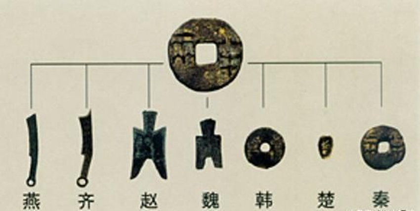
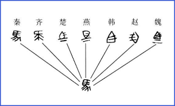
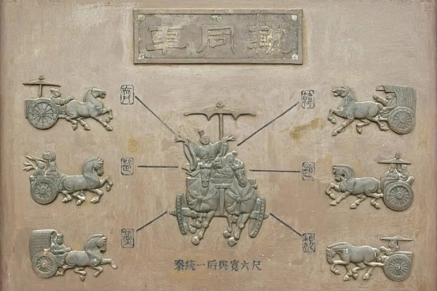

统一中国秦始皇结束了封建割据状态，扫平六合，统一六国，奠定了中国的基本版图。他通过强有力的军事行动，把南蛮、东夷、北狄、西戎纳入中华民族的一部分，实现了广土众民的大一统。这一壮举为后来的大一统局面打下了坚实基础，使得法家政治和儒家意识形态的结合成为稳定国家的关键。 |
Row 1, Cell 2 | |||
创立政制秦始皇废除了分封制，建立了郡县制，确立了中央集权专制的统治结构，对中国封建社会影响深远。他推行选贤任能机制，打破了传统的血缘宗法制度，使得底层平民有了向上跃升的机会。秦始皇以“无功不受禄”为原则，创造了其父富有天下而子弟为匹夫的现象，这是中国古代史上的独特现象。尽管秦朝灭亡后贵族制死灰复燃，但这一政制变革具有里程碑意义。 |
Row 1, Cell 2 | |||
厉行法治秦国借鉴了西周和春秋战国时期诸侯国的法治经验，以《法经》和《韩非子》为基础，通过商鞅变法和李斯的立法，建立了较为完善的法律体系。秦始皇时期，法治得以推行，法律成为治国的重要工具。虽然秦律偏重义务、轻视权利，但其法治思想和统治理念在当时已具有前瞻性。秦朝的依法治国理念至今仍是现代社会的主流价值取向。 |
Row 2, Cell 2 | |||
文化整合秦始皇推行了“法同壹、车同轨、书同文、度同制、币同值、行同伦”的政策，从文化、经济到日常生活实现了全国的标准化和统一。这为中华文明的传承和发展创造了基础条件，避免了国家的分裂，使统一成为中国文化的核心特征。



|
||||